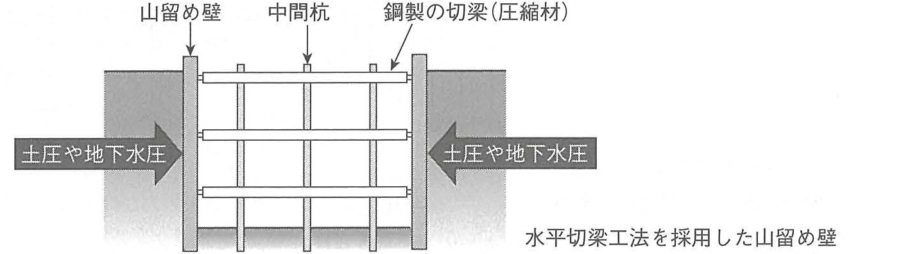
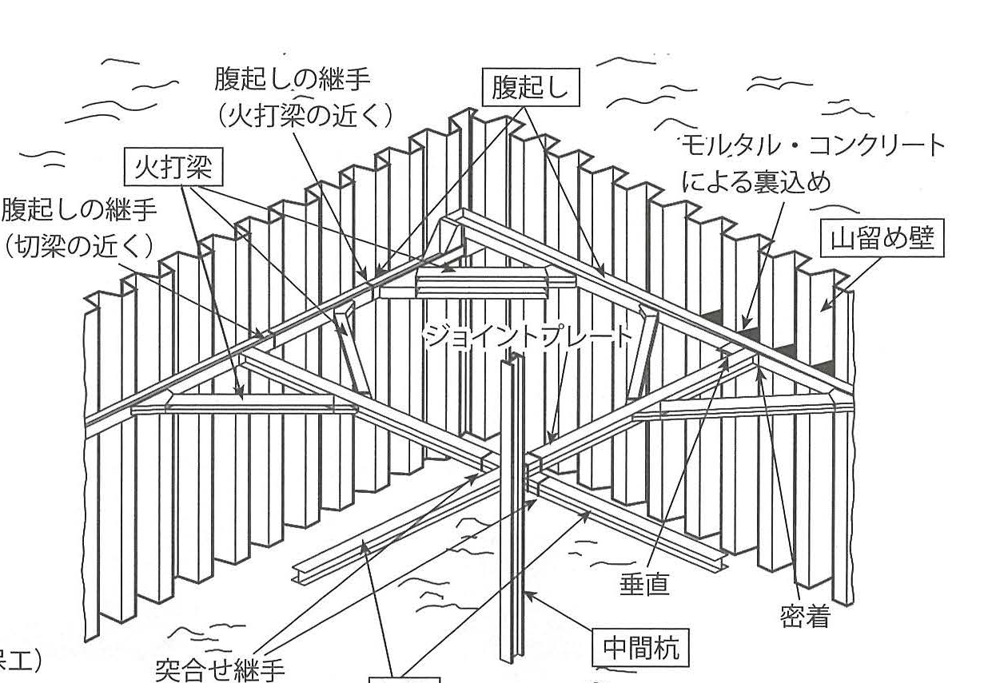
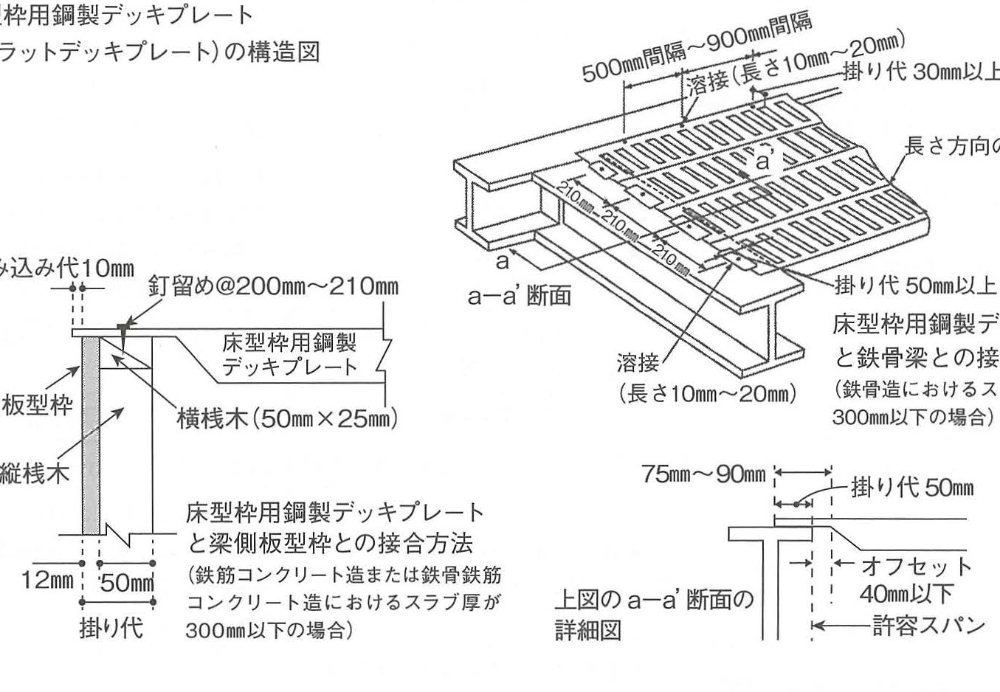

Tuy nhiên, nội dung trả lời cho từng câu phải khác nhau; không được sử dụng các nội dung liên quan đến vật liệu như quy cách, chất lượng, vận chuyển vào công trường, bảo quản; môi trường làm việc như tiếng ồn, rung động, điều kiện thời tiết; công tác bảo dưỡng và an toàn.
Trong công tác đất, khi lắp đặt hệ chống của công pháp thanh chống thép cho tường chắn đất tạm, hãy mô tả cụ thể 2 điểm cần lưu ý khi thi công. Không được đề cập đến xử lý nước ngầm và công tác duy trì, quản lý sau khi lắp đặt.
Trong công tác cốt thép, khi lắp đặt bar support hoặc spacer, hãy mô tả cụ thể 2 điểm cần lưu ý khi thi công.
Trong công tác ván khuôn của kết cấu bê tông cốt thép, khi lắp đặt tấm deck thép dùng làm ván khuôn sàn (flat deck plate), hãy mô tả cụ thể 2 điểm cần lưu ý khi thi công.
Trong công tác bê tông, hãy mô tả cụ thể 2 điểm cần lưu ý khi thi công để đổ bê tông thường một cách đặc chắc.
Tường chắn đất tạm trong công tác đất là kết cấu tiếp nhận áp lực ngang của nền đất, gồm áp lực đất và áp lực nước ngầm từ mặt bên hố đào, nhằm ngăn hố đào bị sụp. Tường phải ngăn biến dạng quá mức, ngăn sụp đổ và có khả năng chịu lực theo yêu cầu.
Nếu khả năng chịu lực của tường chắn không đủ, đất có thể sụp vào hố đào và dẫn đến tai nạn nghiêm trọng như chôn vùi người làm việc bên trong.
Khi chỉ riêng tường chắn đất không thể chịu được áp lực đất và áp lực nước ngầm, cần bố trí các cấu kiện chống như thanh chống, wale và cọc trung gian để gia cường tường chắn.
Phương pháp này được gọi là công pháp thanh chống ngang. Các thanh thép chịu nén bố trí theo phương ngang tiếp nhận áp lực ngang từ đất và nước ngầm.
Đặc điểm chính là: ① có thể thay đổi số lượng và cách bố trí hệ chống theo điều kiện công trường; ② do hệ chống nằm trong phạm vi hố đào nên việc đào khó hơn một chút, nhưng tường chắn khó bị biến dạng.
土圧・地下水圧→山留め壁→腹起し → 切梁

Book p.357 - 山留め壁・腹起し・切梁の構成
(3) 鋼製切梁工法の切梁を設置するときの留意事項
原文
① 切梁は圧縮部材として設計されているため、圧縮応力以外の応力（曲げ応力など）が作用しないように、腹起しと垂直かつ密着させて取り付ける。
② 切梁は、大きな圧縮応力を受けると座屈するおそれがあるため、切梁の中間部には、適切な間隔で、中間杭を設ける。
③ 切梁の継手は、曲げ応力を受けないよう、突合せ継手として、中間杭付近に設ける。その継手部には、ジョイントプレート（スプライスプレート）を取り付けて補強する。
Bản dịch tiếng Việt
① Thanh chống được thiết kế là cấu kiện chịu nén, vì vậy phải lắp vuông góc và áp sát với wale để ứng suất ngoài ứng suất nén, như ứng suất uốn, không tác dụng lên thanh chống.
② Do thanh chống có nguy cơ buckling khi chịu lực nén lớn, tại phần giữa thanh chống phải bố trí cọc trung gian theo khoảng cách thích hợp.
③ Mối nối thanh chống phải là mối nối đối đầu, bố trí gần cọc trung gian để tránh chịu ứng suất uốn; tại mối nối phải gắn joint plate (splice plate) để gia cường.
(4) 鋼製切梁工法の腹起しを設置するときの留意事項
原文
① 腹起しと山留め壁を接合するため、山留め壁にブラケットを取り付け、このブラケットで腹起しを受け止める。腹起しと切梁は、このブラケット上で、ボルトにより緊結する。ボルトによる緊結は、補助ピースまたは受けピースを介して行うようにする。
② 腹起しと山留め壁との間には隙間が生じやすいため、山留め壁と腹起しの間には、モルタルやコンクリートを裏込めし、壁面と腹起しを密着させる。
③ 腹起しの継手は構造上の弱点となりやすいため、応力的に余裕のある切梁や火打梁の支点の近くに設ける。
Bản dịch tiếng Việt
① Gắn bracket vào tường chắn để đỡ wale. Wale và thanh chống được siết bằng bu lông tại bracket; việc siết bu lông thực hiện thông qua chi tiết phụ trợ hoặc chi tiết đỡ.
② Do giữa wale và tường chắn dễ xuất hiện khe hở, phải chèn mortar hoặc bê tông vào giữa hai cấu kiện để bảo đảm bề mặt tường và wale tiếp xúc chặt.
③ Mối nối wale dễ trở thành điểm yếu kết cấu, vì vậy bố trí gần gối của thanh chống hoặc giằng góc, nơi ứng suất nhỏ hơn.
Cấu tạo các cấu kiện theo sách
腹起し: cấu kiện đỡ ngang trực tiếp áp lực đất lên tường chắn. 切梁: cấu kiện ngang nhận phản lực gối của 腹起し dưới dạng lực nén. 火打梁: cấu kiện ngang tăng khả năng đỡ của 切梁 và 腹起し. 中間杭: cấu kiện đứng rút ngắn chiều dài buckling của 切梁 và chống buckling.
Hình cấu tạo 土留め支保工 trên Book page 358
表示（日本語）
Ý nghĩa trong hình
腹起しの継手（火打梁の近く）／腹起しの継手（切梁の近く）
Mối nối wale được đặt gần gối của giằng góc hoặc thanh chống.
モルタル・コンクリートによる裏込め
Chèn mortar/bê tông giữa tường chắn và wale để tạo tiếp xúc chặt.
突合せ継手（中間杭付近）＋ジョイントプレート
Mối nối đối đầu của thanh chống đặt gần cọc trung gian và gia cường bằng bản nối.
垂直・密着
Thanh chống phải vuông góc và áp sát với wale.
腹起しブラケット・ボルト・スチフナー・補助ピース
Các chi tiết của ví dụ liên kết 山留め壁～腹起し～切梁 và cấu tạo stiffener thép.
Đối với cốt thép trong cột và dầm, phải bảo đảm chiều dày lớp bê tông bảo vệ, tức khoảng cách từ bề mặt ngoài cùng của cốt thép đến bề mặt bê tông, để hạn chế ăn mòn do nước, không khí, axit và muối.
① Bar support chủ yếu dùng cho cốt thép nằm ngang của dầm, sàn để bảo đảm lớp bảo vệ theo phương trên dưới; đồng thời phải giữ cốt thép đúng vị trí và chịu được tải trọng thi công.
② Spacer chủ yếu dùng cho cốt thép đứng của cột, tường để bảo đảm lớp bảo vệ theo phương trái phải, tức mặt bên; đồng thời phải giữ cốt thép đúng vị trí và chịu được tải trọng thi công.
“Bar support” là một loại spacer; nếu phân vân cách ghi trong đáp án thì ghi 「スペーサー」 sẽ an toàn hơn.
Trong tiêu chuẩn của Viện Kiến trúc Nhật Bản, 「バーサポート」 được ghi là 「サポート」 và 「スペーサー」 là 「スペーサ」, nhưng ý nghĩa không khác nhau.
Loại vật liệu và cách bố trí bar support, spacer có thể được quy định riêng trong đặc tả; nếu không có quy định riêng thì theo tiêu chuẩn trong bảng.
Các nội dung thuộc “bố trí” hoặc “ghi chú” phù hợp làm đáp án. Tuy nhiên, không dùng nội dung về “loại vật liệu” làm đáp án vì đề đã loại trừ nội dung liên quan đến vật liệu.
Tiêu chuẩn bố trí support/spacer cho cốt thép
Bộ phận
Bố trí
Ghi chú
Sàn
Cả cốt thép lớp trên và dưới: khoảng cách khoảng 0,9 m; đầu mút ≤ 0,1 m
Dầm
Khoảng cách khoảng 1,5 m; đầu mút khoảng 0,5 m
Bố trí ở một trong hai phía trên hoặc dưới và đối xứng ở cả hai mặt bên
Cột
Hàng trên: khoảng 0,5 m dưới dầm; hàng giữa: cách hàng trên khoảng 1,5 m. Theo chiều rộng cột: ≤ 1,0 m 2 cái; > 1,0 m 3 cái
Bố trí đối xứng điểm trong cùng một mặt phẳng
Móng
Khoảng cách khoảng 0,9 m
Bố trí tại bốn góc móng và bốn góc cột
Dầm móng
Khoảng cách khoảng 1,5 m; đầu mút khoảng 0,5 m
Bố trí ở một trong hai phía trên hoặc dưới và đối xứng ở hai mặt bên
Tường / tường ngoài tầng hầm
Hàng trên: đến khoảng 0,5 m dưới dầm; hàng giữa: cách khoảng 1,5 m; khoảng cách ngang 1,5 m; đầu mút khoảng 0,5 m
Chú thích: 1 Spacer chỉ ở mặt bên có thể làm bằng nhựa. 2 Khi đổ cùng vật liệu cách nhiệt, spacer phải có diện tích tiếp xúc đủ để không bị lún vào vật liệu cách nhiệt dưới tải trọng đỡ.

Book p.358 - 鉄筋のかぶり確保に用いるバーサポート・スペーサー
(3) バーサポートやスペーサーを設置するときの留意事項
原文
① バーサポートやスペーサーは、組み立てられた鉄筋を安全に支持できるものとし、コンクリートの打込み圧力がかかっても変形しないものとする。また、剛性・強度を有しており、コンクリートと同等以上の耐久性がある材料で製作する。
② バーサポートやスペーサーは、かぶり厚さを確保できるものとするが、かぶり厚さが過大とならないようにする必要もあるので、その数量や配置を施工図で確認する。
③ 鋼製のバーサポートやスペーサーを使用するときは、その耐久性を長期にわたって確保できるよう、型枠に接する部分に、防錆処理が行われていることを確認する。
Bản dịch tiếng Việt
① Bar support và spacer phải đỡ an toàn cốt thép đã lắp dựng và không bị biến dạng khi chịu áp lực đổ bê tông; đồng thời phải có độ cứng, cường độ và độ bền lâu bằng hoặc cao hơn bê tông.
② Phải bảo đảm chiều dày lớp bảo vệ nhưng cũng tránh để lớp bảo vệ quá lớn, vì vậy cần kiểm tra số lượng và vị trí bố trí trên bản vẽ thi công.
③ Khi dùng bar support hoặc spacer bằng thép, để bảo đảm độ bền lâu dài, phải kiểm tra phần tiếp xúc với ván khuôn đã được xử lý chống gỉ.
Tấm deck thép dùng làm ván khuôn sàn, còn gọi là flat deck plate, là vật liệu làm ván khuôn để lại cho sàn hoặc mái của kết cấu bê tông cốt thép. Mặt trên được gia công nhẵn; mặt dưới có các rib, tức gân lồi để gia cường.
Hình minh họa phương pháp liên kết với ván khuôn thành dầm trong kết cấu RC/SRC khi slab dày không quá 300 mm, và phương pháp liên kết với dầm thép trong kết cấu thép khi slab dày không quá 300 mm.
Các trị số cấu tạo thể hiện trên hình Book page 360
Hạng mục
Trị số / nội dung
デッキプレート幅
500mm～900mm
飲み込み代
10mm
図示の掛り代
30mm以上（図中の一部詳細）
釘留め
@200mm～210mm
横桟木
50mm×25mm
鉄骨梁への溶接
長さ10mm～20mm
掛り代
50mm以上
a-a′断面の図示寸法
75mm～90mm
オフセット
40mm以下

Book p.360 - フラットデッキプレートの構成と取付け例
(2) 床型枠用鋼製デッキプレートを設置するときの留意事項
原文
① 床型枠用鋼製デッキプレートを敷き込む前に、梁上面にある油や浮き錆などを除去する。柱周辺や梁継手では、必要に応じて切欠きを入れ、受け材に馴染ませる。
② 床型枠用鋼製デッキプレートを受ける梁の側型枠は、縦桟木で補強する。この縦桟木の間隔は、梁の側型枠の座屈による倒れを防止するため、600mm以下とする。
③ 梁の側型枠を縦桟木で補強したときは、床型枠用鋼製デッキプレートの支持部における固定を確実にするため、その端部を所定の間隔で釘留めする。
① Trước khi đặt flat deck, phải loại bỏ dầu và gỉ nổi trên mặt trên của dầm. Quanh cột và tại mối nối dầm, khi cần tạo phần khoét để tấm phù hợp với cấu kiện đỡ.
② Ván khuôn thành dầm đỡ flat deck phải được gia cường bằng thanh nẹp đứng. Khoảng cách thanh nẹp đứng phải ≤ 600 mm để ngăn ván khuôn thành dầm bị đổ do buckling.
③ Sau khi gia cường ván khuôn thành dầm, để cố định chắc phần đỡ của flat deck, phải đóng đinh đầu tấm theo khoảng cách quy định.
④ Khi liên kết với ván khuôn thành dầm, chiều ăn vào dầm theo phương dọc của flat deck, về nguyên tắc tại tầng thông thường, là 10 mm để ngăn mortar rò ra ngoài.
Nếu bê tông không được đổ đặc chắc sẽ xảy ra phân tầng vật liệu, tức mortar và cốt liệu không còn trộn đều với nhau.
Bê tông bị phân tầng dễ phát sinh khuyết tật như nứt trong quá trình thi công và làm giảm cường độ sau khi hoàn thành. Vì vậy khi đổ phải bảo đảm độ đặc chắc.
① 縦形シュートでは、打上げ面の近くでコンクリートを放出し、投入口と排出口との水平距離は、垂直距離の2分の1以下とする。
② 斜めシュートでは、排出口に漏斗管の高さ 60cm以上のものを設ける。漏斗管を設けない場合は、傾斜角度を水平に対して30度以上とする。図では投下高さ 2m以下が示されている。
Bản dịch tiếng Việt
Để đổ bê tông đặc chắc, kiểm soát quá trình rơi của bê tông là đặc biệt quan trọng.
Khi đổ vào cột có ván khuôn cao từ 4,5 m trở lên, phải dùng máng đứng hoặc ống đổ bê tông để giảm tốc độ rơi.Chỉ trong trường hợp bất khả kháng mới có thể dùng máng nghiêng.
① Với máng đứng, xả gần bề mặt bê tông đang dâng và khoảng cách ngang giữa cửa nạp và cửa xả phải ≤ 1/2 khoảng cách đứng.
② Với máng nghiêng, bố trí ống phễu cao ≥ 60 cm. Nếu không có ống phễu, góc nghiêng phải ≥ 30° so với phương ngang. Hình minh họa chiều cao thả ≤ 2 m.
Ngay cả khi bê tông đã được đổ đúng cách, nếu phương pháp đầm không phù hợp thì phân tầng vẫn có thể xảy ra trong giai đoạn đầm và không thể thu được bê tông đặc chắc.
Chiều dài phần rung của đầm: 60～80 cm
Đưa đầm vào và rút ra chậm theo phương thẳng đứng trong khi vẫn rung.
Khoảng cách cắm đầm: ≤ 60 cm
Thời gian rung tại mỗi vị trí: 5～15 giây
Chiều sâu cắm vào lớp trước: khoảng 10 cm
Chiều dày một lớp: 50～70 cm trở xuống
Chiều dày một lớp phải không lớn hơn chiều dài phần rung của đầm, tức 60～80 cm. Khi đổ từ 2 lớp trở lên, đầu đầm phải đi vào lớp đã đổ trước khoảng 10 cm, vì vậy chiều dày mỗi lớp thông thường lấy 50～70 cm trở xuống.
Ngoài nội dung về chiều dày lớp đổ, các quy định khác ở đây về mặt nghiêm ngặt thuộc công tác đầm chặt chứ không phải trực tiếp là điểm lưu ý về đổ bê tông; sách khuyến nghị không chọn chúng làm đáp án cho câu hỏi này.
Khi rút đầm phải vừa rung, vừa rút chậm theo phương thẳng đứng. Nếu rút quá nhanh, lỗ do đầm để lại có thể giữ nước, sau khi bê tông đông cứng trở thành lỗ rỗng và tạo điểm yếu trong bê tông.
Chèn mortar hoặc bê tông để làm kín khe giữa tường chắn và wale.
密着
かぶり厚さ
かぶりあつさ
Chiều dày lớp bê tông bảo vệ
Khoảng cách từ bề mặt ngoài cùng của cốt thép đến bề mặt bê tông.
バーサポート・スペーサー
バーサポート
Bar support
Một loại spacer, chủ yếu giữ cốt thép ngang và bảo đảm lớp bảo vệ theo phương trên-dưới.
スペーサー
スペーサー
Spacer
Chủ yếu giữ cốt thép đứng và bảo đảm lớp bảo vệ ở mặt bên.
かぶり厚さ
捨型枠
すてがたわく
Ván khuôn để lại
Ván khuôn không tháo ra sau khi bê tông đông cứng.
フラットデッキ
リブ
Gân tăng cứng
Phần lồi ở mặt dưới flat deck để gia cường.
床型枠用鋼製デッキプレート
飲み込み代
のみこみしろ
Chiều ăn vào
Khoảng phần tấm deck ăn vào phía dầm.
一般階 10mm
掛り代
かかりしろ
Chiều gối
Chiều dài phần cấu kiện đặt trên gối đỡ.
鉄骨梁
縦桟木
たてさんぎ
Thanh nẹp đứng
Gia cường ván khuôn thành dầm, chống đổ do buckling.
600mm以下
材料分離
ざいりょうぶんり
Phân tầng vật liệu
Mortar và cốt liệu không còn phân bố đồng đều.
密実性
縦形シュート
たてがたシュート
Máng đứng
Thiết bị dẫn bê tông xuống theo phương gần thẳng đứng, hạn chế phân tầng.
落下高さ
斜めシュート
ななめシュート
Máng nghiêng
Chỉ dùng khi bất khả kháng theo nội dung sách.
漏斗管・30度以上
漏斗管
ろうとかん
Ống phễu
Phần ống đứng tại cửa xả của máng nghiêng.
60cm以上
締固め
しめかため
Đầm chặt
Quá trình dùng rung để làm bê tông đặc chắc.
棒形振動機
棒形振動機
ぼうがたしんどうき
Đầm dùi dạng thanh
Thiết bị rung cắm trực tiếp vào bê tông.
挿入間隔・加振時間
コールドジョイント
Cold joint
Mạch ngừng không tốt do lớp bê tông trên và dưới không liên kết thành một khối.
下層へ10cm程度挿入
Kiến thức nền cần biết
Kiến thức nền cần biết
打込み là quá trình đưa bê tông vào đúng vị trí trong ván khuôn. 締固め là quá trình dùng rung để làm bê tông đã được đổ trở nên đặc chắc. Trong câu hỏi của tài liệu, sách lưu ý rằng ngoài “chiều dày lớp đổ”, các thông số như bước cắm đầm, thời gian rung và cách rút đầm về mặt nghiêm ngặt thuộc công tác 締固め, nên không phải lựa chọn an toàn nhất khi viết đáp án cho yêu cầu “密実に打ち込む”.
Quan hệ giữa bar support và spacer
Bar support là một loại spacer. Tài liệu phân biệt vai trò điển hình để ghi nhớ: bar support chủ yếu cho cốt thép ngang của dầm/sàn theo phương trên-dưới; spacer chủ yếu cho cốt thép đứng của cột/tường theo phương mặt bên.